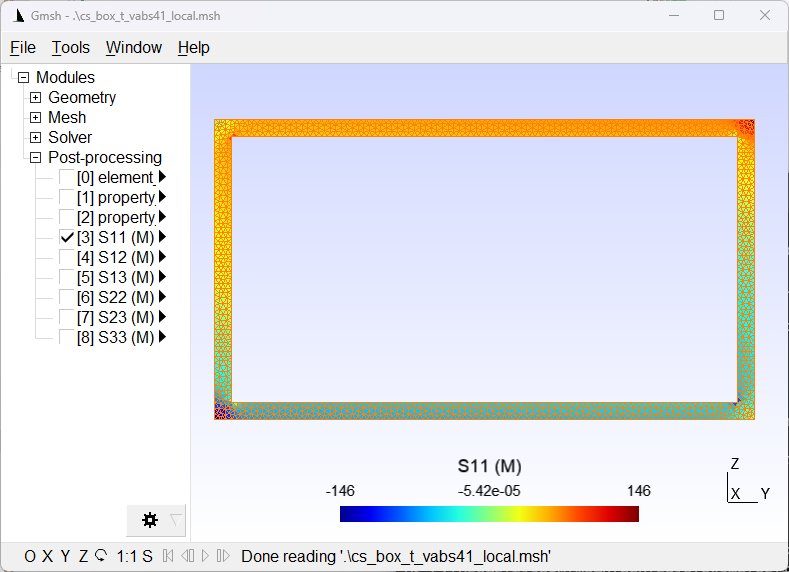

Read Local States¶
After dehomogenization and/or failure analysis, local state fields (strain/stress/displacement/failure index/strength ratio) of the SG can be read using the sgio.readOutputState() function.
Read VABS Element Local Strain and Stress Fields and Visualize in Gmsh¶
Consider the following VABS output file (sgio/examples/files/cs_box_t_vabs41.sg.ELE) after dehomogenization.
This file contains the local strains and stresses of each element of the cross-section, in both the global and material coordinate systems.
Strains/stresses for each element for load case # 1
1 6.6548337309E-06 -2.6345993204E-05 7.8560962337E-06 -1.7183610831E-06 -2.6521318074E-07 -2.0114465020E-06 1.0750124132E+02 -1.0312628657E+01 5.3297065333E+00 1.1125186688E-01 -2.2293680617E-02 -1.9763155864E-02 4.5425790932E-06 -2.7331486560E-05 7.8110701245E-06 3.9389355464E-07 -8.8077782347E-07 -2.0114465020E-06 1.0522691629E+02 -1.8585410861E+01 5.3115276847E+00 2.3855769008E+00 -4.4038891173E-01 -1.9763155864E-02
2 -1.4024016611E-07 1.8995431356E-05 5.7329007405E-06 -6.7419457110E-07 -2.4441809558E-07 1.2292066807E-07 2.7978014946E+01 1.5080740468E+01 3.8885789793E+00 -7.2149438297E-02 -4.1765781659E-02 2.0973407179E-02 1.3422429727E-06 1.8678037203E-05 5.6960512980E-06 -2.1566777099E-06 -6.9346284416E-07 1.2292066807E-07 3.0164490479E+01 1.2701065298E+01 3.8733148826E+00 -2.2586249708E+00 -3.4673142208E-01 2.0973407179E-02
3 -1.4422803101E-07 3.3490955634E-05 1.1628523030E-06 -1.0687038767E-06 -2.0138168215E-08 1.3112251832E-07 5.1745575112E+01 2.6765522794E+01 7.8916754100E-01 8.3425533522E-02 6.2805178236E-03 2.8104031875E-02 2.4696509173E-06 3.2934006511E-05 1.1576875950E-06 -3.6825828249E-06 -1.1131242912E-07 1.3112251832E-07 5.5614601957E+01 2.2395124427E+01 7.8722756459E-01 -3.7856013114E+00 -5.5656214562E-02 2.8104031875E-02
4 6.7246332002E-06 -2.8812834172E-05 4.5138491289E-06 -1.6070394459E-06 -1.2859360038E-07 -2.0314926853E-06 1.0507505109E+02 -1.2184032322E+01 3.0626053577E+00 1.9065881653E-01 -8.8834660925E-04 1.2910104904E-02 4.4196846922E-06 -2.9761461124E-05 4.4898451008E-06 6.9790906200E-07 -4.8234971013E-07 -2.0314926853E-06 1.0252339806E+02 -2.0237793565E+01 3.0530946686E+00 2.7423118522E+00 -2.4117485507E-01 1.2910104904E-02
5 -1.2059035458E-07 2.0737716048E-05 3.4017766843E-06 -7.9666955239E-07 -7.8964312052E-08 1.2190946936E-07 3.1244454738E+01 1.6514922433E+01 2.3083270623E+00 -1.4865691327E-01 8.3243080405E-03 -2.4453686697E-03 1.4972945751E-06 2.0376638264E-05 3.3850946735E-06 -2.4145544820E-06 -3.4562121395E-07 1.2190946936E-07 3.3634707145E+01 1.3856114019E+01 2.3018643780E+00 -2.5389093201E+00 -1.7281060697E-01 -2.4453686697E-03
6 -7.6611529969E-08 3.3454676706E-05 2.9844140853E-06 -1.0677426807E-06 -5.8060534702E-08 5.9705432061E-08 5.3206212289E+01 2.6848015414E+01 2.0252772597E+00 1.0021933547E-01 1.2923268591E-02 -3.4745039472E-02 2.5340194622E-06 3.2887747049E-05 2.9706587556E-06 -3.6783736729E-06 -2.9203598386E-07 5.9705432061E-08 5.7079255769E+01 2.2363667994E+01 2.0200479538E+00 -3.7728241444E+00 -1.4601799193E-01 -3.4745039472E-02
7 -2.2992070705E-07 3.7716144026E-05 4.1391582983E-06 -1.1803731130E-06 -1.3781368150E-07 1.5394254279E-07 5.6734134697E+01 3.0031064955E+01 2.8081009583E+00 8.1447333511E-02 -1.0783913839E-02 1.0815287927E-02 2.7142808768E-06 3.7103112193E-05 4.1155859178E-06 -4.1245746968E-06 -4.6214346507E-07 1.5394254279E-07 6.1083283982E+01 2.5230116291E+01 2.7985984241E+00 -4.2677019517E+00 -2.3107173253E-01 1.0815287927E-02
8 6.9325495617E-06 -6.5422656001E-06 6.9052020091E-06 -2.5730456906E-06 -2.5289542865E-07 -2.0105673220E-06 1.4628260870E+02 6.1066899659E+00 4.6843255211E+00 6.6267610687E-02 -2.9508892534E-02 3.2993615006E-03 6.3623168264E-06 -7.9487221625E-06 6.8640736291E-06 -2.0028129553E-06 -7.9389174189E-07 -2.0105673220E-06 1.4633782258E+02 -5.4051310705E+00 4.6675700678E+00 1.1053728183E-02 -3.9694587095E-01 3.2993615006E-03
9 -3.1367237010E-07 4.6424007637E-06 5.0950737363E-06 -6.9804722839E-08 -1.9427763532E-07 1.2022945485E-07 5.0218332952E-01 3.2262029083E+00 3.4562692930E+00 -4.2131468096E-02 -2.5620024782E-02 1.1181040405E-02 5.0944577586E-08 4.6233944116E-06 5.0641244768E-06 -4.3442167053E-07 -5.9343362023E-07 1.2022945485E-07 1.0035219464E+00 3.1439081999E+00 3.4436046442E+00 -5.4347008497E-01 -2.9671681012E-01 1.1181040405E-02
To read the data, we need to first read the cross-sectional data using sgio.read().
Then read the local state fields using sgio.readOutputState().
The returned object is a list of N sgio.model.StateCase objects corresponding to N load cases.
import sgio
# Read the mesh
sg = sgio.read(
filename="files/cs_box_t_vabs41.sg",
file_format='vabs',
)
# Read the output state
state_cases = sgio.readOutputState(
filename="files/cs_box_t_vabs41.sg",
file_format='vabs',
analysis='d',
extension='ele',
sg=sg,
tool_version='4.1'
)
Then, we need to add the local state fields to the cross-sectional data.
state_case = state_cases[0]
# Add the local state to the mesh
sgio.addCellDictDataToMesh(
dict_data=state_case.getState('esm').data,
name=[
'S11 (M)', 'S12 (M)', 'S13 (M)',
'S22 (M)', 'S23 (M)', 'S33 (M)'
],
mesh=sg.mesh
)
Finally, we need to write the cross-sectional data to a Gmsh file.
# Write the mesh to a gmsh file
sgio.write(
sg=sg,
fn="files/cs_box_t_vabs41_local.msh",
file_format='gmsh',
)
The following figure shows the visualization of the local stress field of the cross-section in the material coordinate system.
{kind=link}
